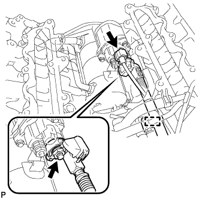
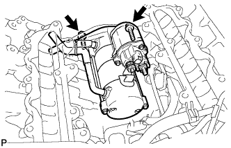

STARTER > REMOVAL |
| 1. DISCONNECT CABLE FROM NEGATIVE BATTERY TERMINAL |
| 2. REMOVE FUEL COOLER ASSEMBLY |
Remove the fuel cooler assembly (Click here).
| 3. REMOVE STARTER ASSEMBLY |
 |
Detach the harness clamp and disconnect the wire harness.
Disconnect the starter connector.
Remove the nut and disconnect the starter wire.
 |
Disconnect the 2 starter hoses.
 |
Remove the 2 bolts and starter.